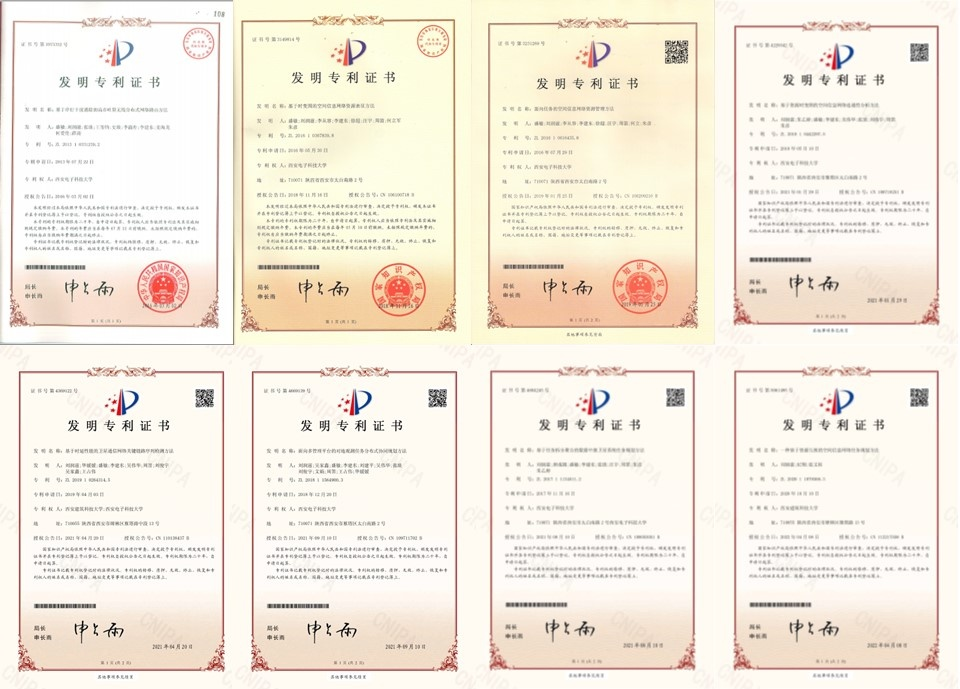

|
刘润滋 博士 |
发表论文
2022年：
Weihua Wu, Runzi Liu*, Qinghai Yang and Tony Q. S. Quek, "Learning-Based Robust Resource Allocation for D2D Underlaying Cellular Network," IEEE Transactions on Wireless Communications, vol. 21, no. 8, pp. 6731-6745, Aug. 2022.
2021年：
Weihua Wu, Runzi Liu*, Qinghai Yang and Tony Q. S. Quek, "Robust Resource Allocation for Vehicular Communications With Imperfect CSI," IEEE Transactions on Wireless Communications, vol. 20, no. 9, pp. 5883-5897, Sept. 2021. (SCI: 000694698500032, EI: 20211610232848)
Weihua Wu, Runzi Liu*, Qinghai Yang, Hangguan Shan and Tony Q. S. Quek, "Learning-Based Robust Resource Allocation for Ultra-Reliable V2X Communications," IEEE Transactions on Wireless Communications, vol. 20, no. 8, pp. 5199-5211, Aug. 2021. (SCI: 000684000600034, EI: 20211310156696)
Guanhua Chai, Weihua Wu, Qinghai Yang, Runzi Liu, Kyung Sup Kwak, "Learning to optimize for resource allocation in LTE-U networks," China Communications, vol. 18, no. 3, pp. 142-154, March 2021. (SCI: 000630210400012)
Guanhua Chai, Weihua Wu, Qinghai Yang, Runzi Liu, Meng Qin, Kyung Sup Kwak, "Energy-efficient resource allocation for multi-RAT networks under time average QoS constraint," Wireless Networks, vol. 27, no. 1, pp. 323-338, 2021. (SCI: 000567739800001, EI: 20203809185284)
Zhanwei Wang, Weigang Bai, Min Sheng, Jiandong Li, Runzi Liu, Yuanyuan Bi, "Exploiting Mobile Carrying to Improve the Capacity of Satellite Networks," 2021 IEEE 93rd Vehicular Technology Conference (VTC2021-Spring), 2021, pp. 1-6. (EI: 20213310775633)
刘润滋,吴伟华*,张文柱, 周笛, 张琰. 基于图学习的密集空间网络传输资源调度方法. 电子学报, 2021, 49(11): 2133-2137. (EI: 20215211405885)
吴伟华,刘润滋*,杨清海.LTE和Wi-Fi网络的双时间尺度未授权频谱划分算法.通信学报,2021,42(03):45-53. (EI: 20211710267285)
2020年：
Runzi Liu, Weihua Wu, Qinghai Yang, Di Zhou and Wenzhu Zhang, "Exploring the Information Capacity of Remote Sensing Satellite Networks," IEEE Access, vol. 8, pp. 34056-34070, 2020. (SCI:000556202500001，EI: 20201008273667)
Weihua Wu, Qinghai Yang, Runzi Liu*, Tony Q. S. Quek and Kyung Sup Kwak, "Online Spectrum Partitioning for LTE-U and WLAN Coexistence in Unlicensed Spectrum," IEEE Transactions on Communications, vol. 68, no. 1, pp. 506-520, Jan. 2020. (SCI: 000508378300037, EI:20200408083114)
Runzi Liu, Jing Li, Xiang Ji, Weihua Wu, Di Zhou and Yan Zhang, "Two-Stage Task Planning Based on Resource Interchange in Space Information Networks", 15th EAI International Conference on Communication and Networking in China, pp. 644-659, 2020. (EI：20210909978245)
吴伟华,柴冠华,杨清海,刘润滋*.面向不确定CSI随机接入网络的深度稳健资源分配.通信学报,2020,41(07):29-37. (EI: 20203309051549)
2019年：
Runzi Liu, Yiting Zhu, Yan Zhang, Weihua Wu, Di Zhou and Kai Chi, "Resource Mobility Aware Hybrid Task Planning in Space Information Networks," Journal of Communications and Information Networks, vol. 4, no. 4, pp. 107-116, Dec. 2019.
Min Sheng, Di Zhou, Runzi Liu, Yu Wang and Jiandong Li, "Resource Mobility in Space Information Networks: Opportunities, Challenges, and Approaches," IEEE Network, vol. 33, no. 1, pp. 128-135, January/February 2019. (SCI: 000456170800020, EI: 20185006231535)
Weihua Wu, Qinghai Yang, Runzi Liu* and Kyung Sup Kwak, "Protocol Design and Resource Allocation for LTE-U System Utilizing Licensed and Unlicensed Bands," IEEE Access, vol. 7, pp. 67068-67080, 2019. (SCI: 000471590600001, EI: 20192507055108)
Di Zhou, Min Sheng, Jie Luo, Runzi Liu, Jiandong Li and Zhu Han, "Collaborative Data Scheduling With Joint Forward and Backward Induction in Small Satellite Networks," IEEE Transactions on Communications, vol. 67, no. 5, pp. 3443-3456, May 2019. (SCI: 000468228900027, EI: 20192106963431)
Lijun He, Jiandong Li, Min Sheng, Runzi Liu, Kun Guo and Di Zhou, "Dynamic Scheduling of Hybrid Tasks With Time Windows in Data Relay Satellite Networks," IEEE Transactions on Vehicular Technology, vol. 68, no. 5, pp. 4989-5004, May 2019. (SCI: 000470017500073, EI: 20192307011130)
Yuanyuan Bi, Runzi Liu*, Min Sheng, Jiandong Li, Weihua Wu, Jiaxin Wu and Zhanwei Wang, "Exploring on the Critical Link Sequence of Satellite Networks," 2019 IEEE 89th Vehicular Technology Conference (VTC2019-Spring), Kuala Lumpur, Malaysia, 2019, pp. 1-6. (EI: 20192907204418)
Jiaxin Wu, Runzi Liu*, Min Sheng, Jiandong Li, Kai Chi and Wanyong Tian, “Coordinated Earth Observation Task Scheduling Algorithm for Multiple Controlling Platforms”, Space Information Networks, Singapore: Springer Singapore, 2019, pp. 99–112. (EI: 20192407032775)
Yiting Zhu, Runzi Liu*, Min Sheng, Liqin Yang, Jiandong Li, Weihua Wu, Jianping Liu, “Utilization and Analysis of Resource Mobility in Space Information Networks”, Journal of Communications and Information Networks, vol.4, no.1, pp. 67-77, Mar. 2019.
Yan Zhu, Min Sheng, Jiandong Li, Runzi Liu, Ziye Jia, Jianping Liu, Zhu Han, "Antenna Scheduling for Multiple User Satellites in Space Data Relay Networks," 2019 IEEE International Conference on Communications (ICC), Shanghai, China, 2019, pp. 1-7. (EI: 20193207290625)
2018年：
Runzi Liu, Min Sheng and Weihua Wu, "Energy-Efficient Resource Allocation for Heterogeneous Wireless Network With Multi-Homed User Equipments," IEEE Access, vol. 6, pp. 14591-14601, 2018. (SCI: 000428957400001, EI: 20181004879600)
Di Zhou, Min Sheng, Runzi Liu, Yu Wang and Jiandong Li, "Channel-Aware Mission Scheduling in Broadband Data Relay Satellite Networks," IEEE Journal on Selected Areas in Communications, vol. 36, no. 5, pp. 1052-1064, May 2018. (SCI: 000439994600009, EI: 20181905170166)
Yu Wang, Min Sheng, Weihua Zhuang, Shan Zhang, Ning Zhang, Runzi Liu, Jiandong Li, "Multi-Resource Coordinate Scheduling for Earth Observation in Space Information Networks," IEEE Journal on Selected Areas in Communications, vol. 36, no. 2, pp. 268-279, Feb. 2018. (SCI: 000428893800006, EI: 20180704790541)
Yan Zhu, Min Sheng, Jiandong Li and Runzi Liu, "Performance Analysis of Intermittent Satellite Links With Time-Limited Queuing Model," IEEE Communications Letters, vol. 22, no. 11, pp. 2282-2285, Nov. 2018. (SCI: 000449977700026, EI: 20183605785555)
Yan Zhu, Min Sheng, Jiandong Li, Runzi Liu, Yu Wang, Kai Chi, "Traffic Modeling and Performance Analysis for Remote Sensing Satellite Networks," 2018 IEEE Global Communications Conference (GLOBECOM), Abu Dhabi, United Arab Emirates, 2018, pp. 1-6. (EI: 20191306708713)
Lijun He, Jiandong Li, Min Sheng, Runzi Liu, Kun Guo and Jianping Liu, "Joint allocation of transmission and computation resources for space networks," 2018 IEEE Wireless Communications and Networking Conference (WCNC), Barcelona, Spain, 2018, pp. 1-6. (EI: 20182705393401)
Chengyuan Tang, Runzi Liu*, Min Sheng, An Wang, Ningbo Song, Jiandong Li, Weihua Wu, "Task-oriented Resource Management Simulation Platform for Space Information Networks," 2018 10th International Conference on Wireless Communications and Signal Processing (WCSP), Hangzhou, China, 2018, pp. 1-7. (EI: 20190306388352)
Ziye Jia, Min Sheng, Jiandong Li, Runzi Liu, Kun Guo, Yu Wang, Dong Chen, Rui Ding, "Joint Optimization of VNF Deployment and Routing in Software Defined Satellite Networks," 2018 IEEE 88th Vehicular Technology Conference (VTC-Fall), Chicago, IL, USA, 2018, pp. 1-5. (EI: 20191806858636)
2017年：
Runzi Liu, Min Sheng, Chao Xu, Jiandong Li, Xijun Wang and Di Zhou, "Antenna Slewing Time Aware Mission Scheduling in Space Networks," IEEE Communications Letters, vol. 21, no. 3, pp. 516-519, March 2017. (SCI: 000398251500018, EI: 20171203482036)
Runzi Liu, Min Sheng, King-Shan Lui, Xijun Wang, Di Zhou and Yu Wang, “Capacity of Two-layered Satellite Networks,” Wireless Networks, vol. 23, no. 8, pp. 2651-2669, Nov. 2017. (SCI: 000412467700023, EI: 20162702549268)
Min Sheng, Yu Wang, Jiandong Li, Runzi Liu, Di Zhou and Lijun He, "Toward a Flexible and Reconfigurable Broadband Satellite Network: Resource Management Architecture and Strategies," IEEE Wireless Communications, vol. 24, no. 4, pp. 127-133, 2017. (SCI: 000408222300018, EI: 20172903952593)
Di Zhou, Min Sheng, Xijun Wang, Chao Xu, Runzi Liu and Jiandong Li, "Mission Aware Contact Plan Design in Resource-Limited Small Satellite Networks," IEEE Transactions on Communications, vol. 65, no. 6, pp. 2451-2466, June 2017. (SCI: 000403819300012, EI: 20173003982010)
Yan Zhu, Min Sheng, Jiandong Li, Runzi Liu and Jianping Liu, "Modelling for data acquisition, storage and transmission of EOS," 2017 IEEE 28th Annual International Symposium on Personal, Indoor, and Mobile Radio Communications (PIMRC), Montreal, QC, 2017, pp. 1-6. (EI: 20181605013223)
刘润滋, 盛敏, 唐成圆, 李建东, 杜凯, 杨永安， 基于任务拆分聚合的中继卫星系统任务规划方法. 通信学报, 38(a01), 110-117, 2017.
2016年：
Runzi Liu, Min Sheng, King-Shan Lui, Xijun Wang, Yu Wang and Di Zhou, “An Analytical Framework for Resource-Limited Small Satellite Networks,” IEEE Communications Letters, vol. 20, no. 2, pp. 388-391, Feb. 2016. (SCI: 000370876500048, EI: 20161002055123)
Yu Wang, Min Sheng, King-Shan Lui, Xijun Wang, Yan Shi and Runzi Liu, “Joint spectrum-efficient routing and scheduling with successive interference cancellation in multihop wireless networks”, Wireless Networks, vol. 22, no. 4, pp. 1299–1314, May. 2016. (SCI: 000379511700015, EI: 20153201124694)
Yu Wang, Min Sheng, Jiandong Li, Xijun Wang, Runzi Liu and Di Zhou, "Dynamic Contact Plan Design in Broadband Satellite Networks with Varying Contact Capacity," IEEE Communications Letters, vol. 20, no. 12, pp. 2410-2413, Dec. 2016. (SCI: 000391282800019, EI: 20173404055036)
Di Zhou, Min Sheng, King-Shan Lui, Xijun Wang, Runzi Liu, Chao Xu and Yu Wang, “Lifetime Maximization Routing with Guaranteed Congestion Level for energy-constrained LEO Satellite Networks,” 2016 IEEE 83rd Vehicular Technology Conference (VTC Spring), pp. 1-5, May 15-18, 2016. (EI: 20163102672311)
Di Zhou, Min Sheng, Jiandong Li, Chao Xu, Runzi Liu and Yu Wang, "Toward high throughput contact plan design in resource-limited small satellite networks," 2016 IEEE 27th Annual International Symposium on Personal, Indoor, and Mobile Radio Communications (PIMRC), Valencia, 2016, pp. 1-6. (EI: 20170403282158)
2015年：
Runzi Liu, Yan Shi, King-Shan Lui, Min Sheng, Yu Wang and Yuzhou Li, “Bandwidth Aware High-Throughput Routing with Successive Interference Cancelation in Multihop Wireless Networks,” IEEE Transactions on Vehicular Technology, vol. 64, no. 12, pp. 5866-5877, Dec. 2015. (SCI: 000367547700037, EI: 20160902042352)
Runzi Liu, Min Sheng, King-Shan Lui, Xijun Wang, Di Zhou and Yu Wang, “Capacity Analysis of Two-Layered LEO/MEO Satellite Networks”, 2015 IEEE 81st Vehicular Technology Conference (VTC Spring), pp. 1-5, May 11-14, 2015. (EI: 20153501223618)
Yu Wang, Min Sheng, King-Shan Lui, Xijun Wang, Runzi Liu, Yan Zhang and Di Zhou, “Tailored Load-Aware Routing for Load Balance in Multi-layered Satellite Networks,” 2015 IEEE 82nd Vehicular Technology Conference (VTC Fall), pp. 1-5, Sep. 6-9, 2015. (EI: 20161802319935)
2014年：
Yu Wang, Min Sheng, King-Shan Lui, Xijun Wang, Runzi Liu and Yan Shi, “Spectrum-efficient Routing Algorithms with Successive Interference Cancellation in Multi-hop Wireless Networks,” 2014 IEEE Wireless Communications and Networking Conference (WCNC), pp. 2492-2497, Apr. 6-9, 2014. (EI: 20144900274410)
2013年：
Runzi Liu, Min Sheng, King-Shan Lui, and Yan Shi, “SIC Aware High-Throughput Routing in Multihop Wireless Networks,” 2013 IEEE 24th International Symposium on Personal Indoor and Mobile Radio Communications (PIMRC), pp. 3229-3233, Sept. 8-11, 2013. (EI: 20140717294807).
Shengkai Ren, Min Sheng and Runzi Liu, "Scalable Random Cooperation Routing protocol for large-scale wireless sensor networks", 2013 IEEE 24th International Symposium on Personal Indoor and Mobile Radio Communications (PIMRC), pp. 86-90, Sept. 8-11. (EI: 20140717318354)
|  |
{kind=link}
授权发明专利
2022年：
刘润滋，纪翔，张文柱。专利名称：一种基于资源互换的空间信息网络任务规划方法，中国，专利号：202011079368.3，授权日期：2022年04月08日。
2021年：
刘润滋，吴家鑫，盛敏，李建东，刘建平，吴伟华，张琰，刘俊宇，文娟，周笛，王占伟，毕媛媛。专利名称：面向多管理平台的对地观测任务分布式协同规划方法，中国，专利号：201811564900.3，授权日期：2021年9月10日。
刘润滋，唐成圆，盛敏，李建东，张琰，汪宇，周笛，朱彦，朱乙婷。专利名称：基于任务拆分聚合的数据中继卫星系统任务规划方法，中国，专利号：201711134511.2，授权日期：2021年8月10日。
刘润滋，毕媛媛，盛敏，李建东，吴伟华，周笛，刘俊宇，吴家鑫，王占伟。专利名称：基于时延性能的卫星通信网络关键链路序列检测方法，中国，专利号：201910264314.5，授权日期：2021年4月20日。
刘润滋，朱乙婷，盛敏，李建东，吴伟华，张琰，刘俊宇，周笛，朱彦。专利名称：基于资源时变图的空间信息网络连通性分析方法，中国，专利号：201810442297.5，授权日期：2021年1月29日。
李建东，兰冲，盛敏，刘润滋，张琰，宋宁博，唐成圆。专利名称：一种基于Multi-Agent的弹性可伸缩的任务规划系统及方法，中国，专利号：201810087758.1，授权日期：2021年9月28日。
盛敏，李建东，周笛，李晶，刘润滋，刘建平，徐超，张琰，汪宇。专利名称：一种任务驱动的可重构空间信息网络资源管理架构及方法，中国，专利号：201710793626.6，授权日期：2021年4月6日。
张琰，梁荟萃，苏郁，盛敏，李建东，刘润滋，孙红光，刘俊宇。专利名称：基于定向天线的多频时分多址接入系统和方法，中国，专利号：201711102111.3，授权日期：2021年6月1日。
2020年：
盛敏，何立军，刘润滋，李建东，汪宇，周笛，朱彦，贾子晔，刘建平，李晶。专利名称：面向区域目标的多星多地面站资源协同分配管理方法，中国，专利号：201711068951.2，授权日期：2020年9月8日。
盛敏，何立军，刘润滋，李建东，汪宇，周笛，朱彦，贾子晔。专利名称：面向混合任务的在线中继卫星系统通信资源分配方法，中国，专利号：201810649819.9，授权日期：2020年9月18日。
盛敏，朱彦，李建东，刘润滋，汪宇，周笛，何立军，贾子晔。专利名称：基于优化权重的空间信息网络中继卫星天线调度方法，中国，专利号：201810113806.X，授权日期：2020年8月18日。
盛敏，朱彦，李建东，刘润滋，汪宇，周笛，何立军，贾子晔。专利名称：一种基于断续服务能力模型的单卫星链路性能分析方法，中国，专利号：201810091587.X，授权日期：2020年10月16日。
盛敏，周笛，李建东，李璇，刘润滋，徐超，汪宇，张琰。专利名称：基于资源移动性的空间信息网络资源互换方法，中国，专利号：201710543990.7，授权日期：2020年6月30日。
张琰，李璇，盛敏，李建东，史琰，孙红光，刘俊宇，刘润滋，文娟。专利名称：一种飞行器编队分层入网管理方法及系统，中国，专利号：201810210400.3，授权日期：2020年12月18日。
2019年：
盛敏，刘润滋，李从容，李建东，徐超，汪宇，周笛，何立军，朱彦。专利名称：面向任务的空间信息网络资源管理方法，中国，专利号：201610616435.8，授权日期：2019年1月25日。
盛敏，周笛，李璇，李建东，刘润滋，徐超，汪宇，张琰。专利名称：基于对地观测任务的小卫星网络高效资源调度方法, 中国，专利号：201610394928.1，授权日期：2019年1月25日。
盛敏，汪宇，王玺钧，张琰，李建东，史琰，刘润滋，周笛。专利名称：一种基于负载感知的多层卫星网络路由方法，中国，专利号：201510309913.6，授权日期：2019年4月2日。
苏郁，何宝龙，张琰，盛敏，李建东，史琰，孙红光，刘俊宇，刘润滋，文娟。专利名称：一种基于用户分布的多小区动态软合并的资源管理方法，中国，专利号：201810196885.5，授权日期：2019年10月08日。
史琰，齐俊宇，盛敏，孙红光，刘俊宇，李建东，代良全，刘润滋。专利名称：自组织网络中基于TDMA协议的低功耗时隙调度方法，中国，专利号：201711403012.9，授权日期：2019年10月25日。
2018年：
盛敏，刘润滋，李从容，李建东，徐超，汪宇，周笛，何立军，朱彦。专利名称：基于时变图的空间信息网络资源表征方法，中国，专利号：201610367839.8，授权日期：2018年11月16日。
盛敏，周笛，王玺钧，张琰，李建东，史琰，刘润滋，汪宇。专利名称：基于最小化时延的多层卫星网络最优业务分布路由方法，中国，专利号：ZL201510112475.4，授权日期：2018年6月26日。
2016年：
盛敏，刘润滋，张琰，王玺钧，史琰，李渝舟，李建东。专利名称：基于串行干扰消除的高吞吐量无线分布式网络路由方法，中国，专利号：ZL201310331239.2，授权日期：2016年3月2日。
2014年：
盛敏，任生凯，张琰，刘润滋，李建东，史琰，李红艳，侯蓉晖。专利名称：基于地理位置的大规模无线分布式网络自适应协作路由方法，中国，专利号：ZL201110318710.5，授权日期：2014年4月16日。
申请发明专利
刘润滋，徐航昆，吴伟华，赵素文。专利名称：一种基于图学习的空间信息网络遥感任务规划方法，中国，专利号：202111668121.X，申请日期：2021年12月30日。
刘润滋，丁旭，张文柱，吴伟华。专利名称：一种基于对偶分解的空间网络观测任务分布式规划方法，中国，专利号：202111661349.6，申请日期：2021年12月30日。
刘润滋，丁旭，张文柱。专利名称：一种异构空间网络数传任务协同规划方法，中国，专利号：202110004387.8，申请日期：2021年1月4日。
盛敏，李洋，文娟，李建东，张琰，刘润滋，李伟民，王瑞娜，陈人冰。专利名称：一种基于多个卷积神经网络结合架构深度学习预测方法，中国，专利号：201810157943.3，申请日期：2018年2月25日。
盛敏，刘润滋，朱彦，李建东，徐超，汪宇，周笛，何立军，贾子晔。专利名称：空间信息网络多维资源一体化表征方法, 中国，专利号：201710148665.0，申请日期：2017年3月14日。